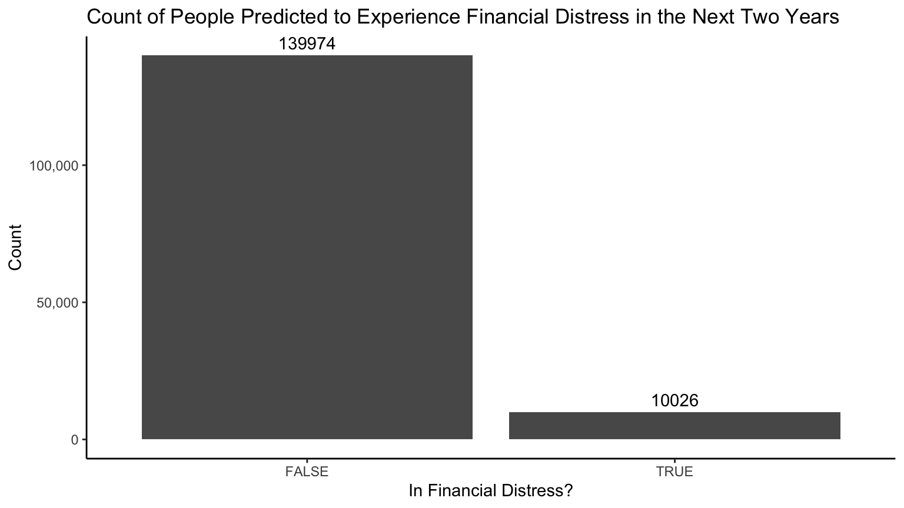
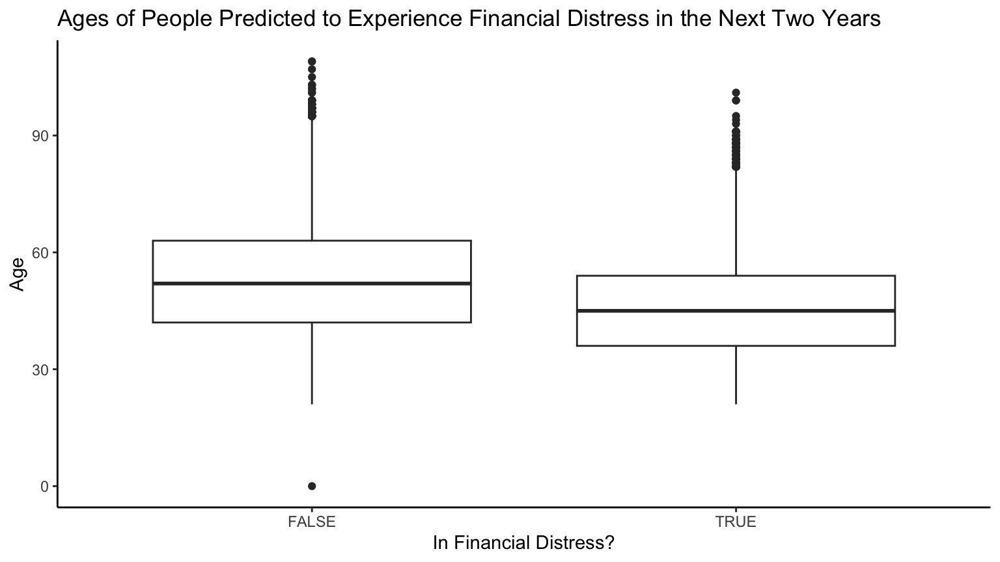
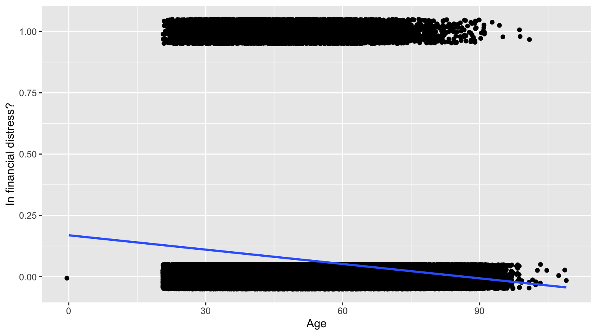
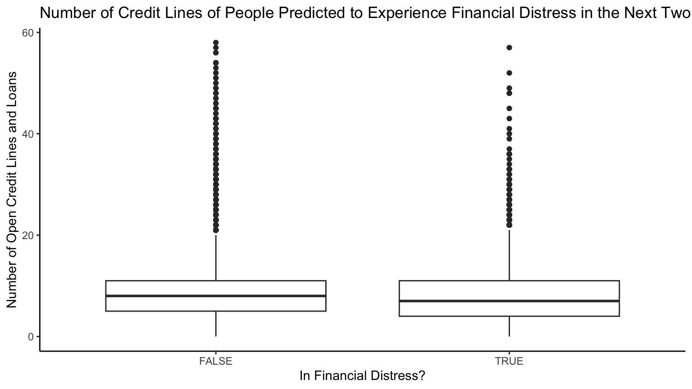
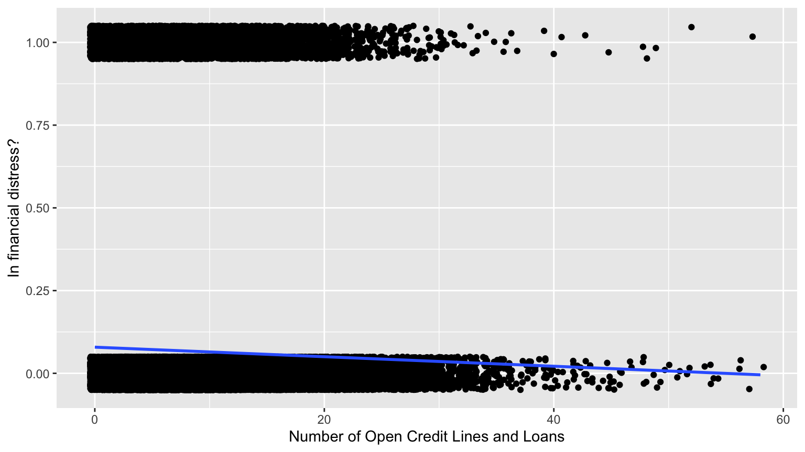
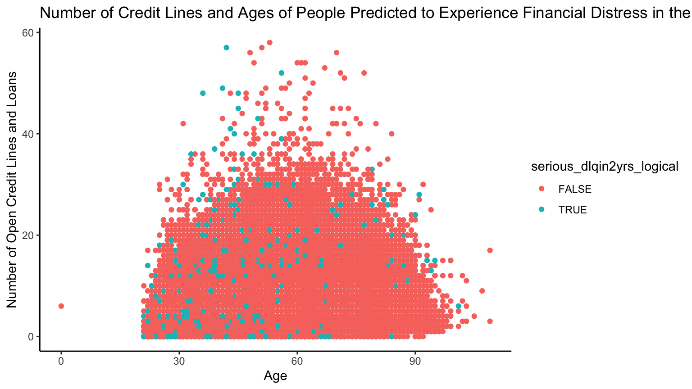
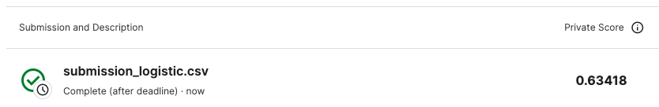
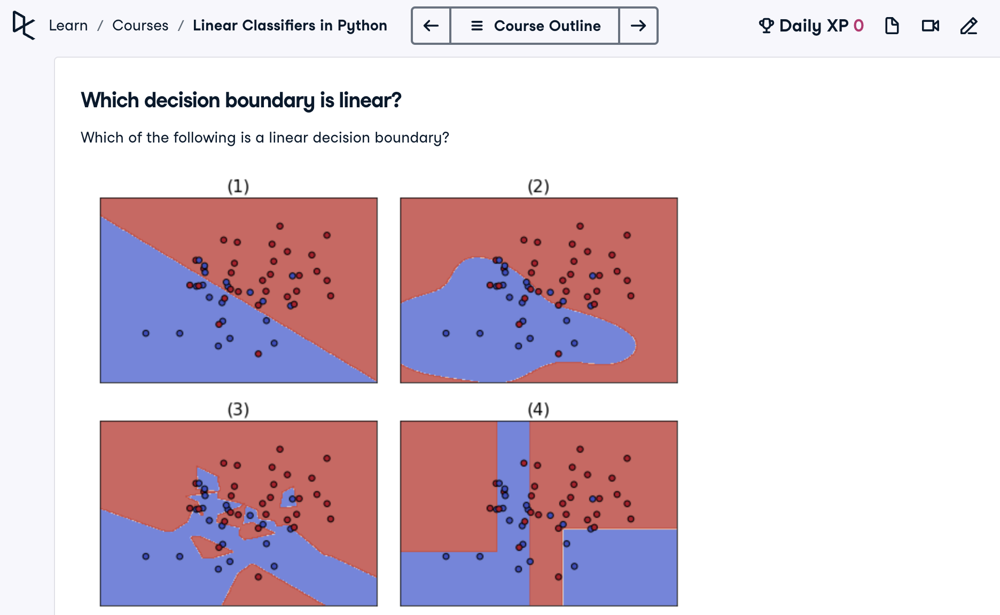
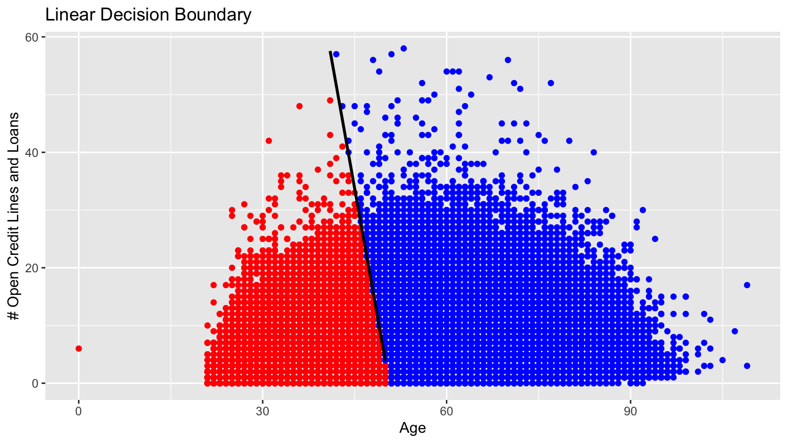

training$serious_dlqin2yrs_logical <- as.logical(training$serious_dlqin2yrs)Logistic Regression
1 Instructions
Participate in Kaggle’s Give Me Some Credit competition, where among other things you will:
- Fit a logistic regression model to predict who will experience financial distress in the next two years
serious_dlqin2yrsas a function ofagenumber_of_open_credit_lines_and_loans
- Compute Area under the ROC curve (AUC) as your score
- Perform crossvalidation to obtain an estimate of the Kaggle score
1.1 Suggested workflow
- Render this file and read all instructions
- On Moodle, submit a
.zipcompressed/archived file of this entire RStudio project folder. We are doing this to ensure the graders can reproduce your Quarto file.
1.2 Evaluation criteria
Grading will be done on a progressive scale:
- Minimum Viable Product Phase 1 - EDA (6/10)
- Did you complete honor code section?
- Does your Quarto file knit? Submissions that don’t knit for users other than yourself will be penalized harshly. So render early, render often, and ensure reproducibility.
- All questions in this phase
- Due Diligence Phase 2 - Fit and submit AUC (7.5/10)
- Phase 3 - Cross validation (9/10)
- Phase 4 - Compare scores (9.5/10)
- Reach for the stars Phase 5 - Linear decision boundary (10/10)
2 Honor Code
- Indicate anybody you collaborated with:
- Indicate that you did not directly copy anybody else’s code: I did not directly copy anybody else’s code.
- Indicate that you did not use ChatGPT for this problem set: I did not use ChatGPT for this problem set.
3 MVP Phase 1: Exploratory data analysis
Conduct an exploratory data analysis to answer the following questions using informative data visualizations and simple summary statistics:
- If you guessed
serious_dlqin2yrsisTRUEfor all observations, how often do you expect to be right? - Does
serious_dlqin2yrshave a positive or negative relationship withage? - Does
serious_dlqin2yrshave a positive or negative relationship withnumber_of_open_credit_lines_and_loans? - Optional: Create a single visualization that shows the relationship of all three variables
First, let’s convert serious_dlqin2yrs to a boolean variable
3.1 EDA of outcome variable
ggplot(data = training, aes(x = serious_dlqin2yrs_logical)) +
geom_bar(stat = "count") +
geom_text(stat = "count", aes(label = ..count..), vjust = -0.5) +
labs(x = 'In Financial Distress?', y = 'Count', title = 'Count of People Predicted to Experience Financial Distress in the Next Two Years') +
scale_y_continuous(labels = scales::comma) +
theme_classic()
10026 (number of y = TRUE) / 150000 (total obs) * 100 = 6.68%
If I guessed serious_dlqin2yrs is TRUE for all observations, I expect to be right for 10026 observations, or 6.68% of the time.
3.2 EDA of outcome variable vs age
ggplot(data = training, aes(x = serious_dlqin2yrs_logical, y = age)) +
geom_boxplot() +
labs(x = 'In Financial Distress?', y = 'Age', title = 'Ages of People Predicted to Experience Financial Distress in the Next Two Years') +
theme_classic()
ggplot(data = training, aes(x = age, y = serious_dlqin2yrs)) +
# Training data with black points:
geom_jitter(height = 0.05) +
# Best fitting linear regression line in blue:
geom_smooth(method = "lm", se = FALSE) +
labs(x = "Age", y = "In financial distress?")
age_financial_distress <- lm(data = training, serious_dlqin2yrs ~ age)
summary(age_financial_distress)
Call:
lm(formula = serious_dlqin2yrs ~ age, data = training)
Residuals:
Min 1Q Median 3Q Max
-0.16886 -0.08497 -0.06351 -0.04010 1.02817
Coefficients:
Estimate Std. Error t value Pr(>|t|)
(Intercept) 1.689e-01 2.356e-03 71.66 <2e-16 ***
age -1.951e-03 4.336e-05 -44.99 <2e-16 ***
---
Signif. codes: 0 '***' 0.001 '**' 0.01 '*' 0.05 '.' 0.1 ' ' 1
Residual standard error: 0.2481 on 149998 degrees of freedom
Multiple R-squared: 0.01331, Adjusted R-squared: 0.01331
F-statistic: 2024 on 1 and 149998 DF, p-value: < 2.2e-16serious_dlqin2yrs has a negative relationship with age because the fitted line in the plot has a negative correlation and the slope in the table of summary statistics is negative.
3.3 EDA of outcome variable vs credit lines
ggplot(data = training, aes(x = serious_dlqin2yrs_logical, y = number_of_open_credit_lines_and_loans)) +
geom_boxplot() +
labs(x = 'In Financial Distress?', y = 'Number of Open Credit Lines and Loans', title = 'Number of Credit Lines of People Predicted to Experience Financial Distress in the Next Two Years') +
#scale_y_continuous(labels = scales::comma) +
theme_classic()
ggplot(data = training, aes(x = number_of_open_credit_lines_and_loans, y = serious_dlqin2yrs)) +
# Training data with black points:
geom_jitter(height = 0.05) +
# Best fitting linear regression line in blue:
geom_smooth(method = "lm", se = FALSE) +
labs(x = "Number of Open Credit Lines and Loans", y = "In financial distress?")
credit_lines_financial_distress <- lm(data = training, serious_dlqin2yrs ~ number_of_open_credit_lines_and_loans)
summary(credit_lines_financial_distress)
Call:
lm(formula = serious_dlqin2yrs ~ number_of_open_credit_lines_and_loans,
data = training)
Residuals:
Min 1Q Median 3Q Max
-0.07901 -0.07181 -0.06749 -0.06173 1.00306
Coefficients:
Estimate Std. Error t value Pr(>|t|)
(Intercept) 0.0790110 0.0012395 63.74 <2e-16
number_of_open_credit_lines_and_loans -0.0014399 0.0001253 -11.50 <2e-16
(Intercept) ***
number_of_open_credit_lines_and_loans ***
---
Signif. codes: 0 '***' 0.001 '**' 0.01 '*' 0.05 '.' 0.1 ' ' 1
Residual standard error: 0.2496 on 149998 degrees of freedom
Multiple R-squared: 0.0008802, Adjusted R-squared: 0.0008736
F-statistic: 132.1 on 1 and 149998 DF, p-value: < 2.2e-16serious_dlqin2yrs has a negative relationship with number_of_open_credit_lines_and_loans because the fitted line in the plot has a negative correlation and the slope in the table of summary statistics is negative.
3.4 Optional: EDA of outcome variable vs both predictor variables
ggplot(data = training, aes(x = age, y = number_of_open_credit_lines_and_loans, color = serious_dlqin2yrs_logical)) +
geom_point() +
labs(x = 'Age', y = 'Number of Open Credit Lines and Loans', title = 'Number of Credit Lines and Ages of People Predicted to Experience Financial Distress in the Next Two Years') +
theme_classic()
4 Due Diligence Phase 2: Logistic regression model
- Fit the corresponding logistic regression model to all the training data. Use the
broom::tidy()function on the fitted model withconf.int=TRUEto show the confidence intervals. You can sanity check your answers to the EDA with these values. - Obtain the AUC score of the model on the training data
- Predict the outcome for the test data and get a Kaggle score. Your score is the private score, not the public one.
Notes:
- You will add all AUC scores to a table later on.
- I suggest you do an EDA of your predicted/fitted values if you encounter issues
4.1 Fit Model
# Fit model
model_logistic <- glm(serious_dlqin2yrs ~ age + number_of_open_credit_lines_and_loans, data = training, family = "binomial")
summary(model_logistic)
Call:
glm(formula = serious_dlqin2yrs ~ age + number_of_open_credit_lines_and_loans,
family = "binomial", data = training)
Coefficients:
Estimate Std. Error z value Pr(>|z|)
(Intercept) -0.9690421 0.0374978 -25.843 <2e-16
age -0.0329219 0.0007795 -42.233 <2e-16
number_of_open_credit_lines_and_loans -0.0055264 0.0021695 -2.547 0.0109
(Intercept) ***
age ***
number_of_open_credit_lines_and_loans *
---
Signif. codes: 0 '***' 0.001 '**' 0.01 '*' 0.05 '.' 0.1 ' ' 1
(Dispersion parameter for binomial family taken to be 1)
Null deviance: 73616 on 149999 degrees of freedom
Residual deviance: 71533 on 149997 degrees of freedom
AIC: 71539
Number of Fisher Scoring iterations: 6# Extract regression table with confidence intervals
model_logistic %>%
broom::tidy(conf.int = TRUE)# A tibble: 3 × 7
term estimate std.error statistic p.value conf.low conf.high
<chr> <dbl> <dbl> <dbl> <dbl> <dbl> <dbl>
1 (Intercept) -0.969 0.0375 -25.8 2.95e-147 -1.04 -0.896
2 age -0.0329 0.000780 -42.2 0 -0.0345 -0.0314
3 number_of_open_cred… -0.00553 0.00217 -2.55 1.09e- 2 -0.00979 -0.001294.2 Get AUC score
training$y_hat <- predict(model_logistic, newdata = training, type = "response")
auc <- auc(roc(training$serious_dlqin2yrs, training$y_hat))
print(auc)Area under the curve: 0.6364.3 Predict the outcome for test data
test$y_prob <- predict(model_logistic, newdata = test, type = "response")4.4 Make submission to Kaggle
submission_logistic <- test |>
select(Id, y_prob)
submission_logistic <- rename(submission_logistic, Probability = y_prob)
submission_logistic# A tibble: 101,503 × 2
Id Probability
<dbl> <dbl>
1 1 0.0827
2 2 0.0508
3 3 0.0484
4 4 0.0946
5 5 0.132
6 6 0.0446
7 7 0.0664
8 8 0.0262
9 9 0.0381
10 10 0.151
# ℹ 101,493 more rowswrite_csv(submission_logistic, path = "data/submission_logistic.csv")
5 Phase 3: Cross validation
Use \(k=5\) fold cross-validation with a seed value of 76 to set the folds and obtain a local estimate of the Kaggle score. Normally when competing one would compute and cross-validation estimated score first and then compare it to Kaggle true score after, but here we are merely studying rather than actually competing.
#training <- training[, !(names(training) %in% c("index", "index.1"))]
set.seed(76)
num_folds <- 5
folds <- createFolds(training$serious_dlqin2yrs, k = num_folds, list = TRUE, returnTrain = FALSE)
# initialize a vector to hold k-fold numbers
index <- rep(NA, nrow(training))
# iterate along folds
for (i in seq_along(folds)) {
# add fold numbers to index vector
index[folds[[i]]] <- i
}
# add the index column to your dataset
training <- cbind(index = index, training)
# initialize vector to hold 5 auc scores of test_validation
auc_score <- rep(0, num_folds)
for (i in 1:num_folds) {
# initialize test and train validation
test_validation_k_fold <- training |>
filter(index == i)
train_validation_k_fold <- training |>
filter(index != i)
model_logistic_CV <- glm(serious_dlqin2yrs ~ age + number_of_open_credit_lines_and_loans, data = train_validation_k_fold, family = "binomial")
test_validation_k_fold$y_hat <- predict(model_logistic_CV, newdata = test_validation_k_fold, type = "response")
auc <- auc(roc(test_validation_k_fold$serious_dlqin2yrs, test_validation_k_fold$y_hat))
auc_score[i] <- auc
}
avg_auc <- mean(auc_score)
print(avg_auc)[1] 0.63597066 Phase 4: Compare scores
Fill in this table with the three AUC’s of your fitted model you computed
- Would you say the three scores are similar or very different? The three scores are very similar.
- Why? The score on the training data is just slightly better than the one predicted on test data, which means that the model is fitted well on the training data and thus, generalizes well to unseen test data. The 5-fold estimated AUC is close to the AUC on training data, which confirms that the model on the training data is accurate and reliable.
| AUC on training data | AUC on test data from Kaggle | 5-fold Estimated AUC |
|---|---|---|
| 0.636 | 0.63418 | 0.63597 |
7 Reach for the stars Phase 5: Decision boundary
In the Linear Classifiers in Python course, Chapter 1, Video 3, Exercise 1, top left graph in they illustrate a linear decision boundary that sets the boundary at which the predicted level of a binary variable switches from blue to red when you use a model with two numerical predictors \(X_1\) on the x-axis and \(X_2\) on the y-axis

Draw the linear decision boundary for our logistic regression model where:
- x-axis:
agefrom 0 to the maximum age in the training data - y-axis:
number_of_open_credit_lines_and_loansfrom 0 to the maximum number of lines - The decision boundary is where the fitted probability \(\widehat{p}\) is 0.5
# function to return a plot of the linear decision boundary
get_linear_decision_boundary <- function(p_hat) {
log_odds <- log(p_hat/(1-p_hat))
max_age <- max(training$age)
max_credit_lines <- max(training$number_of_open_credit_lines_and_loans)
linear_boundary_points <- data.frame(age = 0:max_age)
linear_decision_boundary <- linear_boundary_points |>
select(age) |>
mutate(credit_lines = (log_odds-(model_logistic$coefficients['(Intercept)'] + (model_logistic$coefficients['age'] * age)))/(model_logistic$coefficients['number_of_open_credit_lines_and_loans'])) |>
filter(credit_lines > 0 & credit_lines < max_credit_lines)
training$color <- ifelse(training$y_hat > p_hat, "red", "blue")
plot <- ggplot(data = training, aes(x = age, y = number_of_open_credit_lines_and_loans)) +
geom_point(color = training$color) +
labs(x = 'Age', y = '# Open Credit Lines and Loans', title = 'Linear Decision Boundary')
#plot
# Add points from Dataset 2 to the plot
plot <- plot + geom_line(data = linear_decision_boundary, aes(x = age, y = credit_lines), linewidth = 1)
return(plot)
}
# get linear decision boundary with my chosen p_hat
get_linear_decision_boundary(0.0668)